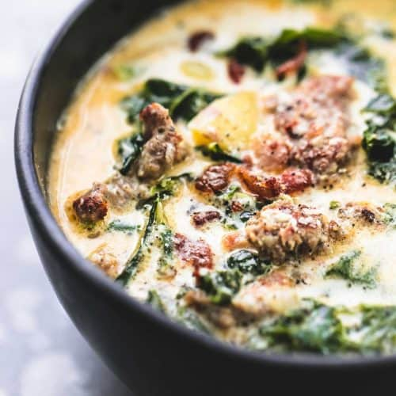

Zuppa Toscana

Finished soup,ready to be eaten!
Creamy soup, that is easy to make ,can be enjoied on a cloudy day, and packed with flavor. It's Keto friendly if the potatoes are subbed for cauliflower. I personally like to use kale instead of spinach.
Ingredients
- 1 pound bulk italian sasauge
- 1 1/2 chili flakes
- 5 slices of bacon
- 2 tbl spoon minced garlic
- large onion diced
- 5 cans chicken broth (13.75 oz)
- 6 potatoes slices or 1 cauliflower small florets
- 1/4 cup spinach or 1 bunch of kale stems removed
Steps
- Cook the Italian sausage and red pepper flakes in a Dutch oven over medium-high heat until crumbly, browned, and no longer pink, 10 to 15 minutes. Drain and set aside.
- Cook the bacon in the same Dutch oven over medium heat until crisp, about 10 minutes. Drain, leaving a few tablespoons of drippings with the bacon in the bottom of the Dutch oven. Stir in the onions and garlic; cook until onions are soft and translucent, about 5 minutes.
- Pour the chicken broth into the Dutch oven with the bacon and onion mixture; bring to a boil over high heat. Add the potatoes or cauliflower, and boil until fork tender, about 20 minutes. Reduce the heat to medium and stir in the heavy cream and the cooked sausage; heat through. Mix the spinach or kale into the soup just before serving.